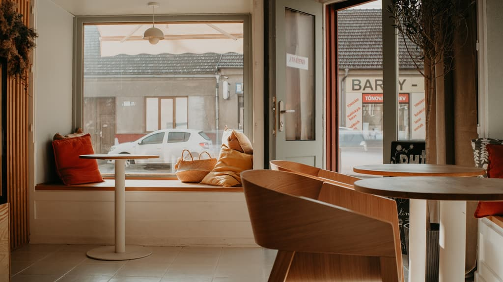
Den v Putře.
Malá cukrárna a kavárna na Táborské v Brně-Židenicích. Pečeme z pravého másla — od svítání do vyprodání. Posouvejte a projděte si s námi celý den.
Od svítání po vyprodánoNejdřív pusinky.
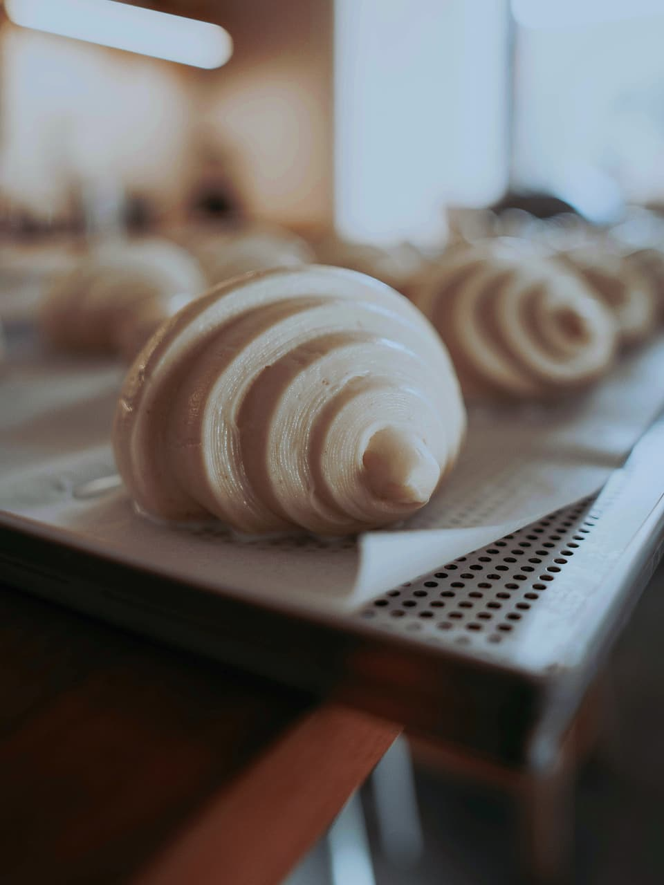
Putra je staročesky čerstvé máslo. Tak pečeme.
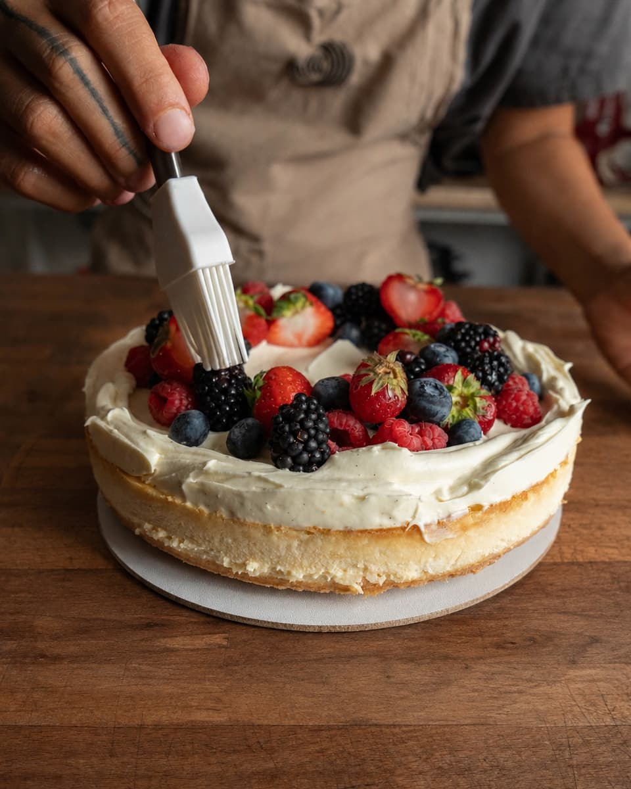
Dort na zítřejší narozeniny.
Na objednávku od 1 290 Kč, 3 dny předem.
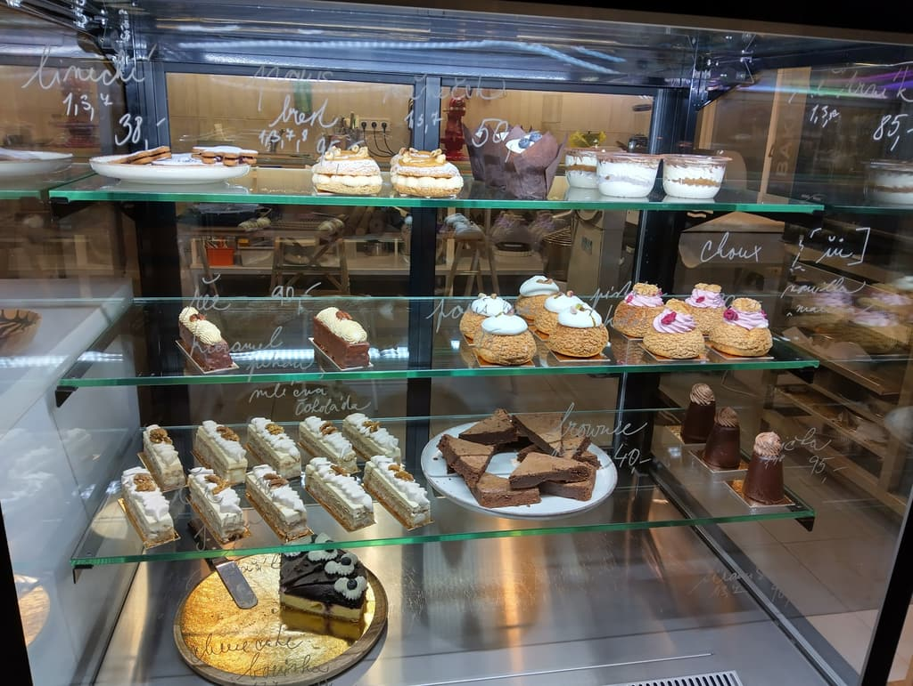
Vitrína se plní.
Větrník 89 Kč · pistáciový řez 95 Kč · choux 85 Kč.
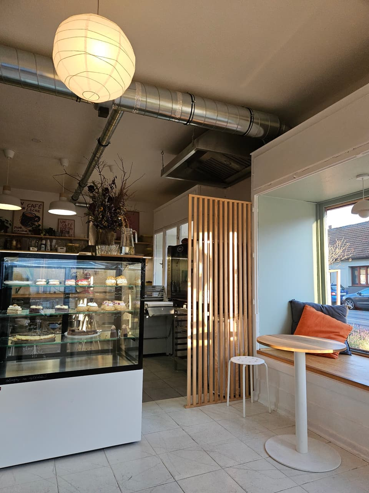
Otevíráme.
Út a Pá do 16:00, St a Čt do 18:00.
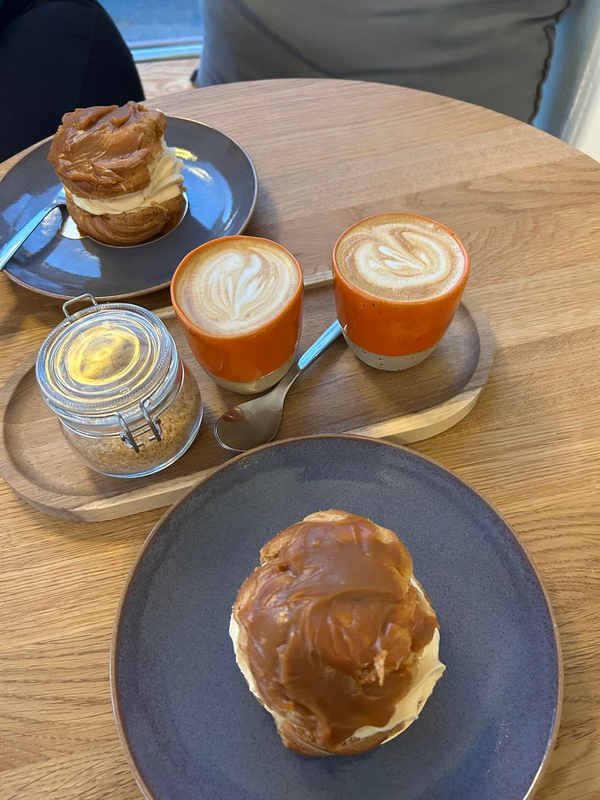
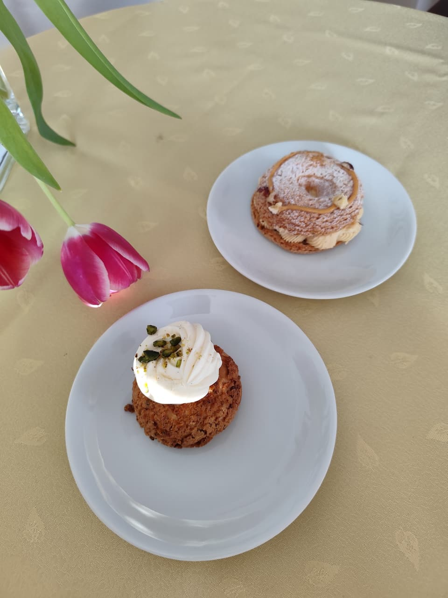
Flat white u okna.
Voda z kohoutku zdarma. Nikdo nespěchá.
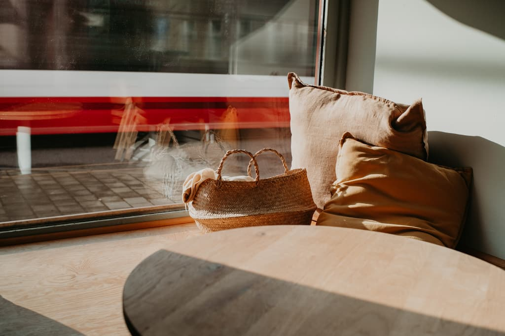
Slunce se opře do parapetu.
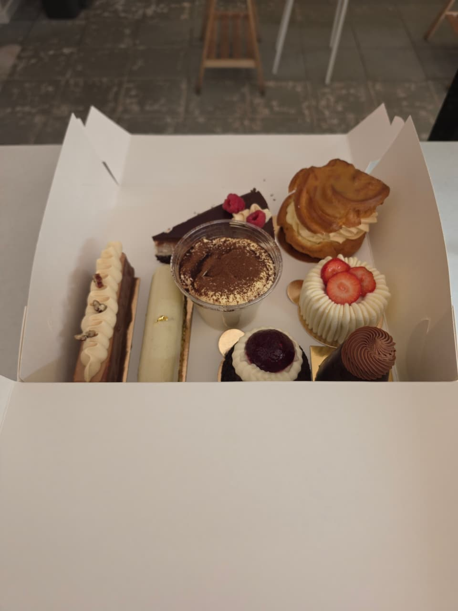
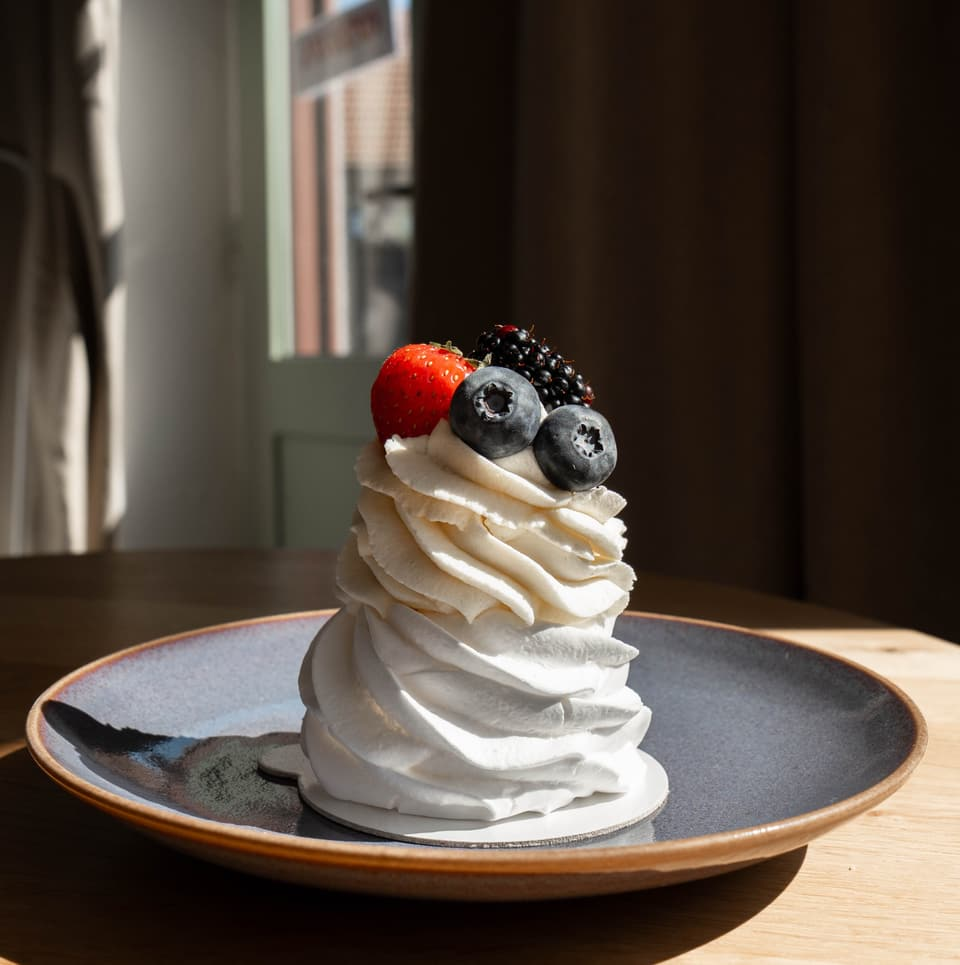
Krabice zákusků na oslavu.
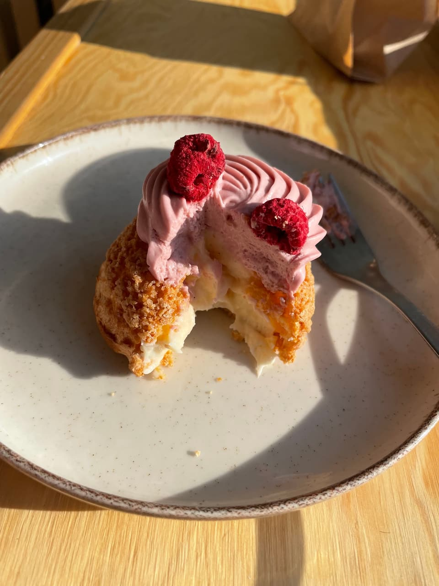
Poslední malinové choux.
V pátek pečeme do vyprodání.
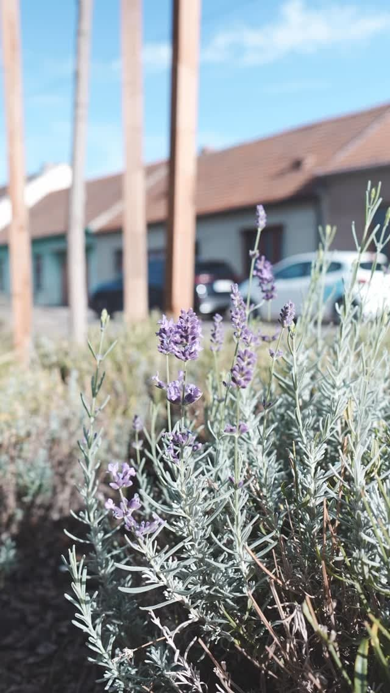
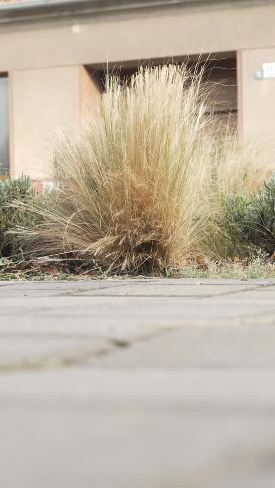
Vyprodáno. Zítra znovu.
A vzadu se chystá vánoční cukroví…
Dort na objednávku
Od 1 290 Kč, nejméně 3 dny předem. Ozveme se do 24 hodin.
Vánoční cukroví 2026
Linecké, vanilkové rohlíčky, pracny, kokosky. 0,5 kg za 690 Kč, 1 kg za 1 290 Kč. Objednávky do 10. 12., výdej 18.–22. 12.
Zamluvit krabiciVe vitríně
Větrník 89 · pistáciový řez 95 · mini pavlova 99 · choux 85 · skořicový šnek 65 · flat white 79 Kč